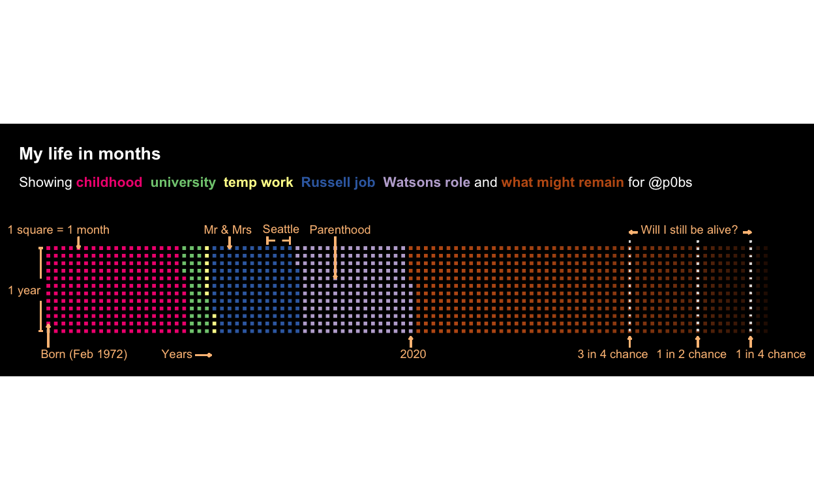

Many of us have recently had more time to reflect on things. One artifact of this reflection is My Life In Months: a chart that explains each month of your life. Like many, I find it a useful way to get some perspective. To me, it is the most meta personal dashboard available. And I’ve found a tweak to make it even more realistic.

You can see my version of the chart above.
This work is inspired by (and benefits from) similar analysis by Sharla Gelfand and Isabella Benabaye. As Isabella says, this type of chart can really provide perspective, which is especially helpful in difficult times.
But to make the chart as realistic as possible – and at the risk of being overly morbid – I wanted to add something to reflect the likelihood of my demise. (That is, the ability for the ‘what might remain’ colour to fade over time at a given rate, corresponding with my likelihood of still being alive at that point.)
Fortunately, there’s a mature field of study available to tap for this information. As I’m a Brit, I’ll be using these actuarial projections from the Office of National Statistics. Specifically, they provide cohort mortality for a 48 year-old British man that is living in 2020. (I use cohort mortality so as to reflect projected mortality improvements, but didn’t over-egg it to include health or postcode details.)
For completeness (and reproducibility), here’s the code that I used to calculate what’s above.
library(tidyverse)
library(glue)
library(lubridate)
library(ggtext)
library(RColorBrewer)
library(waffle)
# Colours ----
add.alpha <- function(value_colour, value_alpha = 1){
apply(
sapply(value_colour, col2rgb)/255,
2,
function(x)
rgb(
x[1], x[2], x[3],
alpha = value_alpha
)
)
}
# values_colour <- brewer.pal(n = 8, name = 'Accent')
values_colour <- c("#FDC086", "#F0027F", "#7FC97F", "#FFFF99", "#386CB0", "#BEAED4", "#BF5B17", "#666666")
background_colour <- 'black'
# Prep data ----
birth_year <- 1972
final_year <- birth_year + 95
birth_month <- 1
current_year <- year(today())
current_month <- month(today())
# csv downloaded from https://www.ons.gov.uk/peoplepopulationandcommunity/birthsdeathsandmarriages/lifeexpectancies/datasets/lifetablesprincipalprojectionunitedkingdom
mortality_data <- read_csv(
"mortality - Sheet1.csv",
col_types = cols(`lx/l48` = col_number())
)
life_expectancy <- mortality_data %>%
filter(
`lx/l48` < 50
) %>%
slice(1) %>%
pull(`Age x`) - 1
life_25 <- mortality_data %>%
filter(
`lx/l48` < 25
) %>%
slice(1) %>%
pull(`Age x`) - 1
life_75 <- mortality_data %>%
filter(
`lx/l48` < 75
) %>%
slice(1) %>%
pull(`Age x`) - 1
life_data_basic <- expand_grid(
month = month.name,
year = birth_year:final_year
) %>%
mutate(month = fct_relevel(month, month.name)) %>%
arrange(year, month) %>%
group_by(year) %>%
mutate(month_number = row_number()) %>%
ungroup() %>%
filter(!(year == birth_year & month_number < birth_month))
eras <- tibble(
year_month = c("1972,1", "1972,2", "1990,9", "1993,6", "1994,4", "2005,10", "2020,8"),
era = c("Blank", "childhood", "university", "temp work", "Russell job", "Watsons role", "what might remain"),
fill_colour = values_colour[c(8, 2:7)]
)
life_data <- life_data_basic %>%
rowwise() %>%
mutate(year_month = paste0(c(year, month_number), collapse = ",")) %>%
ungroup() %>%
left_join(eras, by = "year_month") %>%
fill(era, fill_colour) %>%
mutate(fill_colour = fct_inorder(fill_colour)) %>%
left_join(mortality_data, by = c("year" = "Year")) %>%
rowwise() %>%
mutate(
odds_survival = ifelse(year <= current_year, 1, `lx/l48`/100),
fill_colour_final = add.alpha(
value_colour = fill_colour,
value_alpha = odds_survival
)
) %>%
ungroup() %>%
rownames_to_column(var = "row_number") %>%
group_by(fill_colour_final) %>%
mutate(row_number_max = max(row_number)) %>%
ungroup() %>%
mutate(fill_colour_final = as_factor(fill_colour_final)) %>%
select(month, year, row_number_max, era, fill_colour, odds_survival, fill_colour_final)
# Base plot ----
html_text <- glue(
"<b style = 'font-size:10pt; color:white;'>My life in months</b>",
"<br>",
"<span style = 'font-size:8pt; color:white;'>",
"Showing ",
"<strong style='color:{eras$fill_colour[2]}'>{eras$era[2]}</strong> ",
"<strong style='color:{eras$fill_colour[3]}'>{eras$era[3]}</strong> ",
"<strong style='color:{eras$fill_colour[4]}'>{eras$era[4]}</strong> ",
"<strong style='color:{eras$fill_colour[5]}'>{eras$era[5]}</strong> ",
"<strong style='color:{eras$fill_colour[6]}'>{eras$era[6]}</strong> and ",
"<strong style='color:{eras$fill_colour[7]}'>{eras$era[7]}</strong> for @p0bs",
"</span>"
)
life_in_months_base <- life_data %>%
count(fill_colour_final, sort = FALSE) %>%
ggplot(aes(fill = fill_colour_final, values = n)) +
geom_waffle(color = background_colour, n_rows = 12, size = 1, flip = FALSE) +
coord_equal() +
geom_segment(aes(x = life_25 + 1, xend = life_25 + 1, y = -0, yend = 13), linetype = 3, size = 0.5, color = '#DDDDDD') +
geom_segment(aes(x = life_75 + 1, xend = life_75 + 1, y = -0, yend = 13), linetype = 3, size = 0.5, color = '#DDDDDD') +
geom_segment(aes(x = life_expectancy + 1, xend = life_expectancy + 1, y = -0, yend = 13), linetype = 3, size = 0.5, color = '#DDDDDD') +
scale_x_continuous(limits = c(-0.5, 97.5)) +
scale_y_continuous(limits = c(-4, 16)) +
scale_fill_identity() +
labs(y = NULL, x = NULL, title = html_text) +
theme_void() +
theme(
legend.position = "none",
plot.title.position = "panel",
plot.background = element_rect(fill = background_colour, color = background_colour),
axis.text.x = element_blank(),
axis.text.y = element_blank(),
plot.title = element_textbox_simple(
fill = 'black',
padding = margin(5.5, 5.5, 5.5, 5.5),
margin = margin(5.5, 5.5, 5.5, 5.5),
box.colour = background_colour,
linetype = 1,
r = grid::unit(8, "pt")
)
)
# Initial annotations ----
annotation_base_size <- 3
annotation_lineheight <- 1
initial_annotations_colour <- values_colour[1]
initial_text <- function(x, y, label, size = annotation_base_size, colour = initial_annotations_colour, ...) {
annotate("text", x = x, y = y, label = label, size = size, colour = colour, ...)
}
initial_segment <- function(x, xend, y, yend, colour = initial_annotations_colour) {
geom_segment(aes(x = x, xend = xend, y = y, yend = yend), colour = colour)
}
life_in_months_initial_annotations <- life_in_months_base +
initial_text(x = 0, y = 6.5, label = "1 year", angle = 0, size = annotation_base_size * 0.8, hjust = 1) +
initial_segment(x = 0, xend = 0, y = 1, yend = 5) +
initial_segment(x = -0.25, xend = 0.25, y = 1, yend = 1) +
initial_segment(x = 0, xend = 0, y = 8, yend = 12) +
initial_segment(x = -0.25, xend = 0.25, y = 12, yend = 12) +
initial_text(x = 1, y = 14.5, label = "1 square = 1 month", size = annotation_base_size * 0.8, lineheight = annotation_lineheight, hjust = 0.4) +
geom_segment(aes(x = 5, xend = 5, y = 13.5, yend = 12), arrow = arrow(length = unit(0.0175, "npc")), colour = initial_annotations_colour) +
initial_text(x = 16, y = -2, label = "Years", size = annotation_base_size * 0.8, hjust = 0) +
geom_segment(aes(x = 20.5, xend = 22.5, y = -2.2, yend = -2.2), arrow = arrow(length = unit(0.0175, "npc")), colour = initial_annotations_colour) +
initial_text(x = 47.6, y = -2, label = "2020", size = annotation_base_size * 0.8, hjust = 0, lineheight = annotation_lineheight) +
geom_segment(aes(x = 49, xend = 49, y = -1.2, yend = 0.2), arrow = arrow(length = unit(0.0175, "npc")), colour = initial_annotations_colour) +
initial_text(x = 0, y = -2, label = "Born (Feb 1972)", size = annotation_base_size * 0.8, hjust = 0, lineheight = annotation_lineheight) +
geom_segment(aes(x = 1, xend = 1, y = -1.2, yend = 1.8), arrow = arrow(length = unit(0.0175, "npc")), colour = initial_annotations_colour) +
initial_text(x = 21.6, y = 14.5, label = "Mr & Mrs", size = annotation_base_size * 0.8, lineheight = annotation_lineheight, hjust = 0) +
geom_segment(aes(x = 25, xend = 25, y = 13.5, yend = 12), arrow = arrow(length = unit(0.0175, "npc")), colour = initial_annotations_colour) +
initial_text(x = 35.6, y = 14.5, label = "Parenthood", size = annotation_base_size * 0.8, lineheight = annotation_lineheight, hjust = 0) +
geom_segment(aes(x = 39, xend = 39, y = 13.5, yend = 8), arrow = arrow(length = unit(0.0175, "npc")), colour = initial_annotations_colour) +
initial_text(x = 29.4, y = 14.6, label = "Seattle", size = annotation_base_size * 0.8, lineheight = annotation_lineheight, hjust = 0) +
geom_segment(aes(x = 30, xend = 31, y = 13, yend = 13), colour = initial_annotations_colour) +
geom_segment(aes(x = 32, xend = 33, y = 13, yend = 13), colour = initial_annotations_colour) +
initial_segment(x = 30, xend = 30, y = 12.5, yend = 13.5, colour = initial_annotations_colour) +
initial_segment(x = 33, xend = 33, y = 12.5, yend = 13.5, colour = initial_annotations_colour) +
initial_text(x = 79.5, y = 14.5, label = "Will I still be alive?", size = annotation_base_size * 0.8, lineheight = annotation_lineheight, hjust = 0) +
geom_segment(aes(x = 79, xend = 78, y = 14.1, yend = 14.1), arrow = arrow(length = unit(0.0175, "npc")), colour = initial_annotations_colour) +
geom_segment(aes(x = 93, xend = 94, y = 14.1, yend = 14.1), arrow = arrow(length = unit(0.0175, "npc")), colour = initial_annotations_colour) +
initial_text(x = life_25 -1, y = -2, label = "1 in 4 chance", size = annotation_base_size * 0.8, hjust = 0, lineheight = annotation_lineheight) +
geom_segment(aes(x = life_25 + 1, xend = life_25 + 1, y = -1.2, yend = 0.2), arrow = arrow(length = unit(0.0175, "npc")), colour = initial_annotations_colour) +
initial_text(x = life_expectancy - 4.5, y = -2, label = "1 in 2 chance", size = annotation_base_size * 0.8, hjust = 0, lineheight = annotation_lineheight) +
geom_segment(aes(x = life_expectancy + 1, xend = life_expectancy + 1, y = -1.2, yend = 0.2), arrow = arrow(length = unit(0.0175, "npc")), colour = initial_annotations_colour) +
initial_text(x = life_75 -5.9, y = -2, label = "3 in 4 chance", size = annotation_base_size * 0.8, hjust = 0, lineheight = annotation_lineheight) +
geom_segment(aes(x = life_75 + 1, xend = life_75 + 1, y = -1.2, yend = 0.2), arrow = arrow(length = unit(0.0175, "npc")), colour = initial_annotations_colour)
life_in_months_initial_annotations
R version 4.0.0 (2020-04-24)
Platform: x86_64-apple-darwin17.0 (64-bit)
Running under: macOS Catalina 10.15.6
Matrix products: default
BLAS: /Library/Frameworks/R.framework/Versions/4.0/Resources/lib/libRblas.dylib
LAPACK: /Library/Frameworks/R.framework/Versions/4.0/Resources/lib/libRlapack.dylib
locale:
[1] en_GB.UTF-8/en_GB.UTF-8/en_GB.UTF-8/C/en_GB.UTF-8/en_GB.UTF-8
attached base packages:
[1] stats graphics grDevices utils datasets methods
[7] base
other attached packages:
[1] waffle_1.0.1 RColorBrewer_1.1-2 ggtext_0.1.0
[4] lubridate_1.7.9 glue_1.4.2 forcats_0.5.0
[7] stringr_1.4.0 dplyr_1.0.2 purrr_0.3.4
[10] readr_1.3.1 tidyr_1.1.2 tibble_3.0.3
[13] ggplot2_3.3.2 tidyverse_1.3.0
loaded via a namespace (and not attached):
[1] Rcpp_1.0.5 assertthat_0.2.1 digest_0.6.25
[4] R6_2.4.1 cellranger_1.1.0 plyr_1.8.6
[7] backports_1.1.6 reprex_0.3.0 evaluate_0.14
[10] httr_1.4.2 pillar_1.4.6 rlang_0.4.7
[13] curl_4.3 readxl_1.3.1 rstudioapi_0.11
[16] extrafontdb_1.0 blob_1.2.1 DT_0.15
[19] rmarkdown_2.3 labeling_0.3 extrafont_0.17
[22] htmlwidgets_1.5.1 munsell_0.5.0 gridtext_0.1.1
[25] broom_0.7.0 compiler_4.0.0 modelr_0.1.7
[28] xfun_0.15 pkgconfig_2.0.3 htmltools_0.5.0
[31] tidyselect_1.1.0 gridExtra_2.3 fansi_0.4.1
[34] crayon_1.3.4 dbplyr_1.4.4 withr_2.2.0
[37] grid_4.0.0 jsonlite_1.6.1 Rttf2pt1_1.3.8
[40] gtable_0.3.0 lifecycle_0.2.0 DBI_1.1.0
[43] magrittr_1.5 scales_1.1.1 cli_2.0.2
[46] stringi_1.5.3 farver_2.0.3 fs_1.4.1
[49] xml2_1.3.2 ellipsis_0.3.1 generics_0.0.2
[52] vctrs_0.3.4 distill_0.8 tools_4.0.0
[55] markdown_1.1 hms_0.5.3 yaml_2.2.1
[58] colorspace_1.4-1 rvest_0.3.6 knitr_1.29
[61] haven_2.3.0